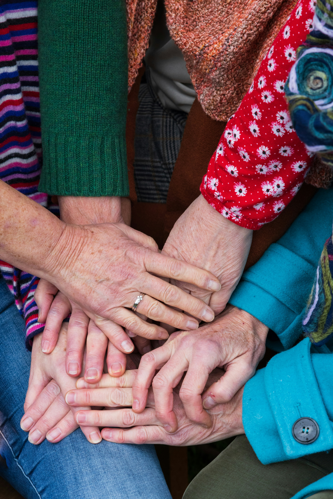
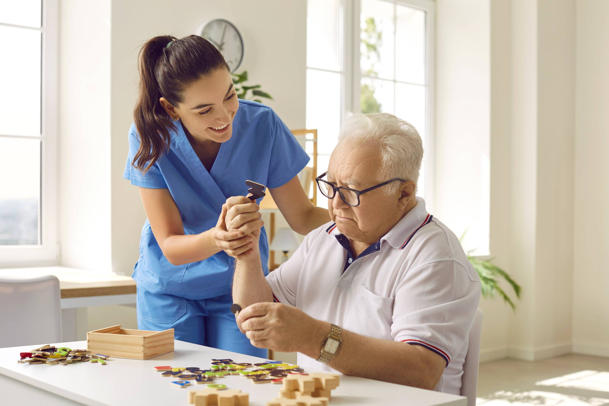
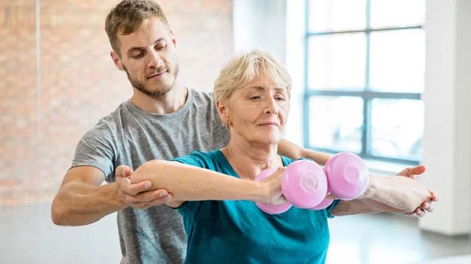

Cuidar é um ato
de amor e dignidade
A Casa do Tempo apoia idosos em situação de vulnerabilidade social, oferecendo cuidado, carinho e oportunidades para um envelhecimento digno.
Uma rede de cuidado e pertencimento
A Casa do Tempo nasceu da convicção de que todo idoso merece viver com dignidade, afeto e pertencimento. Atuamos em comunidades periféricas oferecendo suporte social, saúde preventiva e integração comunitária.
Nossa equipe multidisciplinar trabalha diariamente para garantir que nenhum idoso se sinta só ou esquecido.
- Atendimento humanizado e personalizado
- Transparência na gestão dos recursos
- Parceria com famílias e comunidades
- Defesa dos direitos dos idosos

Nacionalmente
Corações que transformam
Descubra as histórias de quem dedica seu tempo e amor para transformar vidas na Casa do Tempo.
Ana Silva
Assistente Social"Cuidar dos nossos idosos é aprender sobre a vida todos os dias."
Dr. Ricardo Soares
Médico Geriatra"A dignidade na terceira idade é um direito que defendemos com garra."

Carla Gomes
Enfermeira"O carinho é o melhor remédio que podemos oferecer aqui."

Marcos Lima
Educador Físico"Movimento é vida, e ver o sorriso deles nas atividades não tem preço."
Beatriz Soares
Terapeuta Ocupacional"Estimular a autonomia é devolver o brilho no olhar de quem já fez tanto por nós."
Maria Novaes
Cozinheira Voluntária"Uma refeição feita com carinho é um dos melhores presentes que podemos oferecer."
Sua doação muda
histórias reais
Com sua contribuição, mantemos a Casa do Tempo ativa e levamos mais cuidado, carinho e dignidade a milhares de idosos. Cada contribuição, grande ou pequena, tem um impacto direto e mensurável.